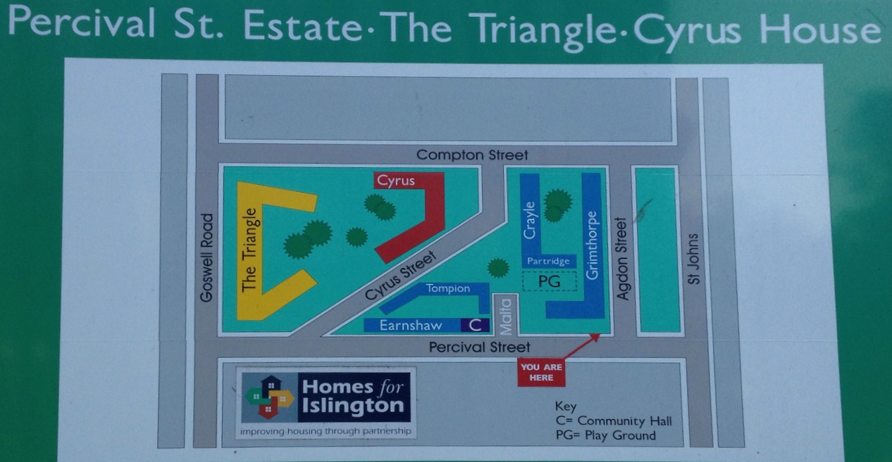

About
About the Percival Estate Community
We are a non-profit community organisation representing residents of the Percival Estate in the London Borough of Islington; we help to give a voice to residents and support with making improvements to the estate.
We're in the process of establishing a formal Tenants and Residents Association (TRA). Constituting a TRA is helpful for the community as this will enable us to access specialised funding pots and other opportunities that can make our estate a better place to live, for everyone.
If you're a tenant or leaseholder that is part of the estate and you're interested in learning more and would like to become a member of the community group, please register to join and we'll be in touch in due course.
About the Percival Estate
The Percival Estate is composed of six buildings that total 293 properties.

Loading...
Notably, the seven-storey residential development 40 Percival Street is owned by The Guinness Partnership, not Islington Council. A community hall can be found on the ground floor - this is leased to Islington Council and the space can be booked by Percival Estate Community members.
History of the Percival Estate
The Percival Estate is an Islington Council estate in Clerkenwell so named after its neighbouring street to the north side - Percival Street - records show this was originally spelled as 'Perceval Street', named after a former Prime Minister of the United Kingdom, Spencer Perceval. The wider footprint of the estate is enclosed by Compton Street on the south side, Agdon Street to the west and neighbours The Triangle Estate to the east.
The estate was constructed in phases; it has a layered history tied to redevelopment efforts in the 20th century.
Cyrus House (1933–1934)
Built by Finsbury Borough Council and designed by E. C. P. Monson in a traditional style influenced by earlier housing projects. The five-storey block contains 40 two- and three-bedroom flats, with balcony access from a central courtyard reached via a striking two-storey archway. It was part of a redevelopment enabled by the Northampton Estate's discounted land offer and revised housing subsidies. The project included extending Malta Street (Malta Street has since been truncated and the southern portion incorporated into Compton Stree). The construction was handled by Gee, Walker & Slater Ltd.
Tompion House & Earnshaw House (1946–1949)
Designed by Messrs Joseph in 1938 and built by W. H. Gaze & Sons Ltd for the London County Council (LCC). These two six-storey blocks were named after horologists Thomas Tompion and Thomas Earnshaw.
Grimthorpe House (1950–1952)
Designed by John Partridge under the LCC Architect's Department and approved in 1949, Grimthorpe House was built by A. E. Symes Ltd. This eight-storey Modernist block with 128 flats reflects the LCC's post-war Modernist aspirations and is named after Lord Grimthorpe, long-serving president of the British Horological Institute. The building features dramatic glazed stairwells and a facade clad in hand-made stock bricks. It was substantially refurbished by Islington Council in 1984–5.
North-west view of Grimthorpe House (1952)
Crayle House (1959–1960)
Designed by the LCC Architect's Department and built by Stewart & Partners Ltd on the site of a former factory. Initially comprising 20 maisonettes, the four-storey block with balcony access was altered in 1983–1984. It was likely named after 17th-century London watchmakers Richard and William Crayle.
Partridge Court (1976–1977)
Added by the Greater London Council (GLC) and designed in 1972 by Renton Howard Wood Levin Partners, with Ove Arup & Partners as engineers. This five-storey block houses 13 flats and maisonettes, including facilities for elderly residents. It is named after an old Clerkenwell family.
Each construction highlights the evolution of public housing in Clerkenwell, from pre-war traditional styles to post-war Modernist approaches, reflecting changing priorities and architectural trends.
Take a look at the links below to learn more about the history of the estate:
- https://www.british-history.ac.uk/survey-london/vol46/pp322-335#h3-s11
- https://manchesterhistory.net/architecture/1940/percivalstreet.html
- https://manchesterhistory.net/architecture/1930/cyrushouse.html
- https://www.towerblock.eca.ed.ac.uk/development/percival-street
- https://www.londonpicturearchive.org.uk/view-item?i=270378&WINID=1731618041420
- https://www.islingtonhistory.org.uk/downloads/streets-with-a-story-19-april-2021-2.pdf
- https://www.theundergroundmap.com/wp/islington-e-k/
- https://www.british-history.ac.uk/survey-london/vol46/pp435-468
- https://en.wikipedia.org/wiki/Street_names_of_Clerkenwell_and_Finsbury